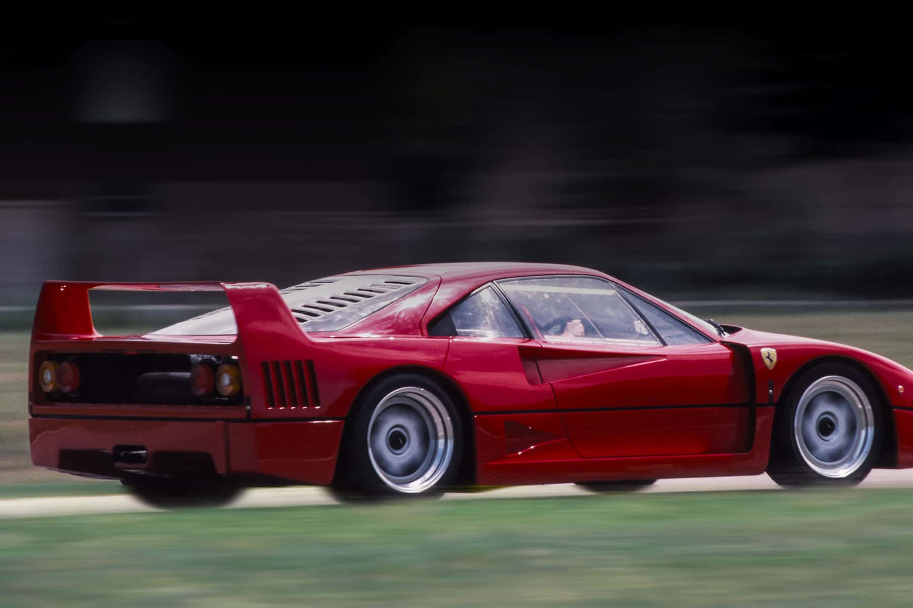

Aos 88 anos, Enzo sabia que sua vida já estava chegando ao fim, talvez por isso tenha decidido encerrar sua carreira da mesma forma que a começou.
Criada para comemorar os 40 anos do cavallino rampante. Idealizada por Enzo Ferrari, desenhada por Pininfarina e projetada pelo engenheiro-chefe da Ferrari.
Enzo Ferrari tinha a vontade de deixar um supercarro como legado da sua vida. O F40 ganhou esse epíteto ao surgir como a super máquina nascida do programa Evoluzione: um carro para uso exclusivo em estrada.